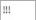
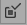

Acknowledging Alarms
The alarm grid is the only place where alarms can be acknowledged.There are several options to acknowledge alarms.
Configure the ALARM_BIT function block and set up the input variable ACKTYPE_1 of the function block ALARM_BIT before deploying and running the application to ensure that the alarm and acknowledgement behave as expected.
The three exclamation point

displayed underneath the Ack column, shows that the alarm is not yet acknowledged. The cross shows that the alarm has been acknowledged. If an alarm is not acknowledged, the alarm cell of the SC column contains the letter A and flashes red.To acknowledge alarms, a few options are available:
Ack:
-
Click the three exclamation points of the alarm you want to acknowledge.
Result: The specific alarm has been acknowledged.
Acknowledge Selected Alarms (

):This option acknowledges all alarms in the alarm grid whose checkbox is ticked.
-
In the alarm grid, tick the checkbox of the alarm that you want to acknowledge.
NOTE: If an alarm is already acknowledged, its checkbox cannot be selected. -
Click on the toolbar icon or right click on the alarm grid and select Acknowledge selected Alarms from the drop-down list menu.
Result: The alarms whose checkbox have been ticked are acknowledged.
Acknowledge Visible Alarms():
If there are many alarms, they may not all fit within the size of the alarm grid. You then need to scroll to see them all.
-
Click on the toolbar icon or right click on the alarm grid and select Acknowledge Visible Alarms from the drop-down list.
Result: The alarms whose checkbox have been ticked are acknowledged.
 ):
):
This option enables you to acknowledge all alarms in the alarm grid.
-
Click on the toolbar icon
or right click on the alarm grid and select Acknowledge All Alarms from the drop-down list.
A pop-up window appears, asking whether you wish to acknowledge all alarms or not.
-
Click on Yes to acknowledge all alarms in the grid.
Result: The alarms whose checkbox have been ticked are acknowledged.
To display the three icons in the alarm grid, the following settings must be configured:
-
Open the Canvas containing the configured alarm grid.
-
Go to and click on the drop-down arrow next to AlarmType.
-
Select Online.NOTE: If Archive is selected, the alarms cannot be acknowledged. For more information, check the Archive document.
-
Go to and click on the drop-down arrow next to EnableMultipleAlarms.
-
Select True.